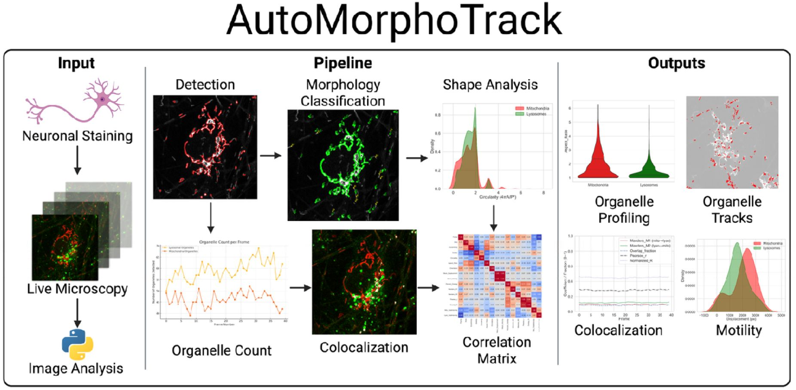

AutoMorphoTrack Software
AutoMorphoTrack is my open-source Python package for automated analysis of mitochondria and lysosomes in multi-channel time-lapse microscopy data. It integrates adaptive segmentation, morphology classification (eccentricity, aspect ratio, area, circularity), frame-by-frame tracking, and colocalization into a single reproducible workflow. Outputs include CSV datasets and publication-ready visualizations (overlays, trajectories, heatmaps).
View on GitHub → · bioRxiv Preprint →
